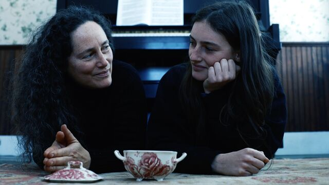

Life in Film
Adam Family Values.
The Adams family discuss their spooky new DIY occult horror Hellbender, being scarred by Phantasm, rocking out to Courtney Barnett, and why maggots make great actors.
AARON YAP
Life in Film
Adam Family Values.
The Adams family discuss their spooky new DIY occult horror Hellbender, being scarred by Phantasm, rocking out to Courtney Barnett, and why maggots make great actors.
AARON YAP
Community • 20 Feb 2022
List maestro Darren Carver-Balsiger on arthouse cinema, enduring The Room, obscure essential horror films from around the world and tips for how to conduct a Letterboxd community poll.
JACK MOULTON
Interview • 17 Feb 2022
Director Josephine Decker opens up about teenage influences, Bach, feminine joys and sorrows, and creating entrances for audiences with The Sky Is Everywhere.
ELLA KEMP
Interview • 14 Feb 2022
Catch the Fair One star and boxing champ Kali ‘KO Mequinonoag’ Reis and director Josef Kubota Wladyka talk about taking the punishment, art as activism, and the beautiful simplicity of Rocky.
GEMMA GRACEWOOD
Community • 20 Feb 2022
List maestro Darren Carver-Balsiger on arthouse cinema, enduring The Room, obscure essential horror films from around the world and tips for how to conduct a Letterboxd community poll.
JACK MOULTON
Interview • 17 Feb 2022
Director Josephine Decker opens up about teenage influences, Bach, feminine joys and sorrows, and creating entrances for audiences with The Sky Is Everywhere.
ELLA KEMP
Interview • 14 Feb 2022
Catch the Fair One star and boxing champ Kali ‘KO Mequinonoag’ Reis and director Josef Kubota Wladyka talk about taking the punishment, art as activism, and the beautiful simplicity of Rocky.
GEMMA GRACEWOOD

"A thing in my life that has probably influenced my movies more than anything—I guess that’s hard to quantify—is my own going to therapy. That space, what you talk about, what that’s all about, that whole history of how you came to feel the way you feel. All the things that led to you interpreting the world in this way, both in a way that you can talk about, and in an unconscious way that you can’t really talk about. That’s my movie terrain, you know? Feelings, your interior life, what people call mental health, or the spectrum of mentality—let’s call it that—that’s my turf. That’s my genre. Feelings are my genre".
—Mike Mills, director of C’mon C’monLife in Film • Mike Mills is a Pussy
Spotlight Favorites from the Letterboxd archive.
More >Big picture • 11 March 2022
Careful how you go. Ella Kemp explores how film lovers can protect themselves from distressing subject matter while celebrating cinema at its most audacious.
ELLA KEMP
Big picture • 11 March 2022
Driven to Love. Titane filmmaker Julia Ducournau speaks with Mitchell Beaupre about destroying societal expectations of gender, the unspoken nature of love, and finding art in a bunch of dancing firefighters.
MITCHELL BEAUPRE
Cinemascope • 11 March 2022
Eva After. Titane filmmaker Julia Ducournau speaks with Mitchell Beaupre about destroying societal expectations of gender, the unspoken nature of love, and finding art in a bunch of dancing firefighters.
KAMBOLE CAMPBELL
Deep impact • 11 March 2022
Rewatching: The Truman Show. Titane filmmaker Julia Ducournau speaks with Mitchell Beaupre about destroying societal expectations of gender, the unspoken nature of love, and finding art in a bunch of dancing firefighters.
DOMINIC CORRY